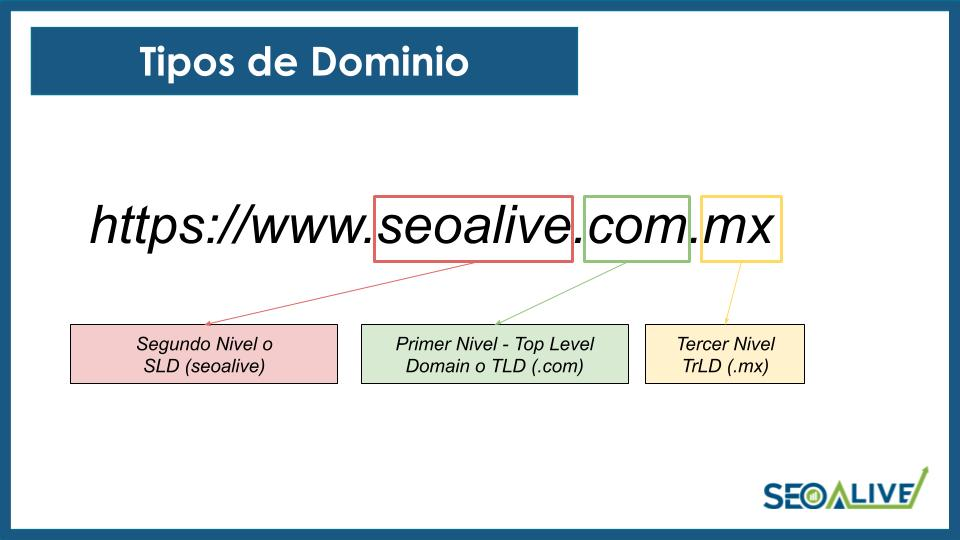

Dominios
Historia de los dominios: Para conocer el origen de los nombres de dominio debemos remontarnos a la tierna juventud de Internet, cuando este recibía el nombre de ARPANET y estaba formado por apenas un puñado de ordenadores interconectados, Antes de usar este sistema de dominios, todos los ordenadores de ARPANET estaban registrados en un archivo llamado hosts.txt que se sincronizaba en todos los ordenadores que formaban parte de la red. De esa forma todos conocían las direcciones de todos. Pronto descubrieron que este sistema era poco eficiente y decidieron centralizar el archivo en un solo servidor, hecho que al poco tiempo, y a medida que iba creciendo ARPANET, tampoco tendría demasiado éxito ya que se producían continuos errores de sincronización. Paul Mockapetris y Jon Postel propusieron crear un sistema de nombres de dominios que administraría el Departamento de Defensa de EEUU, este sistema permitiría asociar los nombres de dominio previamente registrados, a direcciones IP de los ordenadores conectados de una forma más sencilla, esa fue la semilla de lo que más adelante se convertiría en Internet y que, básicamente, mantiene el mismo concepto actualmente.Dominio ¿qué es? Un Dominio es un nombre alfanumérico único que se utiliza para identificar en Internet a un sitio, un servidor web o un servidor de correo. Los dominios permiten a los usuarios de la red escribir un nombre para identificar una dirección electrónica totalmente formada por números. Mediante la utilización de los dominios, los usuarios conectados a Internet pueden encontrar sitios web y enviar e-mail sin necesidad de recordar las direcciones numéricas, que en realidad son las que localizan las computadoras o servicios en Internet. Un dominio de internet se forma a partir de dos elementos principales. Por ejemplo, el nombre de dominio Facebook.com consiste del nombre del sitio web (Facebook) y la extensión del dominio (.com). Cuando una empresa (o una persona) compra un dominio web, puede especificar a qué servidor apunta el nombre de dominio, Un nombre de dominio se convierte en una dirección comercial, por lo que debe tener cuidado al seleccionar el nombre de un dominio. El nombre de dominio debe ser fácil de recordar y fácil de escribir. Todos los sitios web que visitas constan de dos elementos principales: un dominio web y un servidor web. Un servidor web es una máquina física que aloja los archivos y las bases de datos que conforman tu sitio web y los envía a las personas a través de Internet cuando visitan tu sitio desde su computadora. El dominio web es lo que las personas escriben para acceder a tu sitio, y apunta el navegador web hacia el servidor que almacena esos recursos. Sin un dominio web, las personas tendrían que recordar la dirección IP específica de tu servidor, y eso simplemente no va a suceder. ¿Cómo funcionan los dominios? Los dominios funcionan actuando como un atajo para llegar al servidor que aloja tu sitio web. Sin un dominio, cualquiera que quisiera visitar tu sitio web tendría que escribir la dirección IP completa. Pero el problema es que una dirección IP es difícil de memorizar o incluir en los materiales publicitarios. Los dominios también pueden usar re direccionamientos, lo que esencialmente te permite especificar que si las personas visitan tu dominio, son reenviadas automáticamente a otro. Esto puede ser útil para campañas y micro sitios o para reenviar personas a páginas especiales en tu sitio principal. También pueden ser útiles para evitar confusión con el deletreo. Por ejemplo, si visitas www.fb.com, serás reenviado a www.facebook.com. Diferentes tipos de dominio: La parte final de la dirección de internet se conoce como nombre de dominio de primer nivel. Se llaman nivel superior porque se leen de derecha a izquierda, y la parte posterior al punto es la más alta de una jerarquía. No todos los dominios de internet siguen la misma fórmula, y si bien los .com constituyen el 46.5% de todos los sitios web a nivel mundial, eso deja mucho espacio para otros tipos de dominios como .org y .net. En general, los tipos más comunes incluyen TLD: Dominios de nivel superior (Top Level Domains) Un dominio de nivel superior es exactamente lo que dice su nombre: un tipo de dominio que se encuentra en el nivel superior del sistema de dominios de Internet. Hay más de mil TLDs disponibles, pero los más comunes incluyen .com, .org, .net y .edu. CCTLD: Dominios de nivel superior de código de país (Country Code Top Level Domains) Los ccTLDs usan solo dos letras y se basan en códigos internacionales de países, como .es para España y .jp para Japón. A menudo son utilizados por empresas que están creando sitios dedicados para regiones específicas y pueden ser una buena forma de señalar a los usuarios que han llegado al lugar correcto. gTLD: Dominios de nivel superior genérico (Generic Top Level Domains) Un gTLD es esencialmente un TLD que no depende de un código de país. Muchos gTLDs están destinados a un caso de uso específico, como .edu, que está dirigido a instituciones educativas. Dicho esto, no es necesario que cumplas ningún criterio específico para registrar un gTLD, motivo por el cual .com no solo se utiliza con fines comerciales. Otros ejemplos de gTLD incluyen .mil (militar), .gov (gobierno), .org (para organizaciones sin fines de lucro y otras organizaciones) y .net, que originalmente fue diseñado para proveedores de servicios de Internet (ISPs) pero que ahora tiene un uso mucho más amplio. Tipos de dominios Si bien las categorías mencionadas anteriormente son las más frecuentes, existen otras variaciones que te puedes encontrar. Dominios de segundo nivel Probablemente los has visto antes. Estamos hablando de un dominio que se encuentra directamente debajo de un dominio de nivel superior. No vamos a ponernos demasiado técnicos aquí porque es más fácil mostrar ejemplos, particularmente cuando se trata de códigos de países. Por ejemplo, las empresas británicas ocasionalmente usan .co.uk en lugar de .com, y es un ejemplo perfecto de un dominio de segundo nivel. Otro dominio de segundo nivel es .gov.uk, que a menudo es utilizado por instituciones gubernamentales, y .ac.uk, que es utilizado por instituciones académicas y universidades. Subdominios Los subdominios son útiles porque no requieren que los webmasters adquieran un dominio web adicional para crear divisiones dentro de su sitio. En cambio, pueden crear un subdominio que efectivamente apunte a un directorio específico en el servidor. Esto puede ser muy útil para sitios de campañas y otros tipos de contenidos web que deben mantenerse separados del sitio principal. Por ejemplo, Facebook utiliza developers.facebook.com para proporcionar información específica para desarrolladores de aplicaciones y web que quieran usar la API de Facebook. Otro buen ejemplo es support.google.com. Regresar al menú |